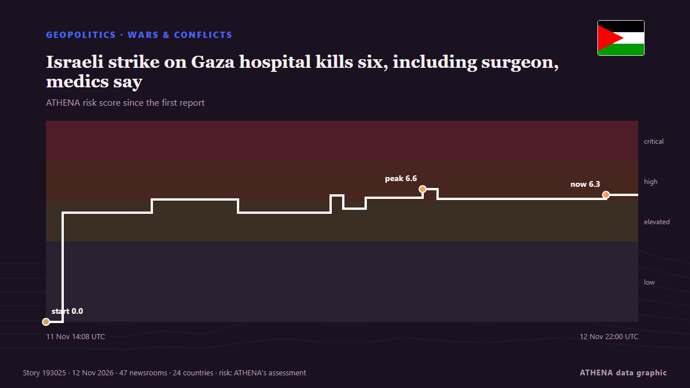

Israeli strike on Gaza hospital kills six, including surgeon, medics say

By Nidal al-Mughrabi CAIRO, Nov 12 (Reuters) - An Israeli airstrike on southern Gaza's main hospital overnight killed at least six Palestinians including a surgeon and a teenage boy, medics said, the… from Al-Monitor
Reported independently by 48 outlets in 24 countries since 11 Nov, first by Al Jazeera English; coverage is fading. ATHENA rates the risk high (6.1/10), driven mainly by the severity of the harm described and its geographic and sector reach. Confidence is 90% (high), with 48 independent outlets corroborating it and an average source reliability of 76%. Outlets by country: United States (6), Qatar (4), Turkey (4). Coverage: 11 Nov to 12 Nov, 23 hours.
Why it matters: This tracker follows the conflict involving Israel, Gaza, the West Bank and Lebanon — military events, humanitarian conditions and diplomacy — as covered by outlets around the world.
What changed: 67 new reports from 45 outlets in the 24 hours to 12 Nov.
First reported as: Israel kills Gaza goalkeeper days after playing in cup for slain athletes
How to read this page
- What you are reading
- 48 outlets in 24 countries reported this event. The reports below are listed in the order they appeared; each headline opens the original article. ATHENA writes none of the reports.
- Our reading
- Under watch — The reports describe action, or a decision still to be taken, between states or armed groups. ATHENA follows what happens next. We look for four kinds of development: nothing further, an open action that someone claims, an action through others or without a claim, and an accident or misreading. We do not predict which will happen.
- How much evidence
- Strong Many independent outlets in many countries describe the same event.
After repeats, off-topic items and stale reports are removed, 24 of the 40 listed reports are counted; 100% of the headlines match the event.
- What this does not mean
- ATHENA measures how an event is reported, not whether it is true. This is not a forecast, a judgement on who is right, or advice.
- What would change it
- Reports from other independent outlets showing a different development, or a firm confirmation or denial from an official source.
Reading R2 · refreshed with every update of this page. ATHENA has not yet published a track record for these readings; when it does, it will be linked here.
At a glance
Selected, scored and written by ATHENA's published methodology. No editor intervenes in individual events. How this is produced ›
| 11 Nov 10:57 UTC | 1 |
|---|---|
| 11 Nov 12:57 UTC | 1 |
| 11 Nov 14:57 UTC | 1 |
| 11 Nov 16:57 UTC | 0 |
| 11 Nov 18:57 UTC | 2 |
| 11 Nov 20:57 UTC | 1 |
| 11 Nov 22:57 UTC | 5 |
| 12 Nov 00:57 UTC | 8 |
| 12 Nov 02:57 UTC | 5 |
| 12 Nov 04:57 UTC | 5 |
| 12 Nov 06:57 UTC | 9 |
| 12 Nov 08:57 UTC | 6 |
| 12 Nov 10:57 UTC | 6 |
| 12 Nov 12:57 UTC | 7 |
| 12 Nov 14:57 UTC | 9 |
| 12 Nov 16:57 UTC | 4 |
| 12 Nov 18:57 UTC | 2 |
| 12 Nov 20:57 UTC | 1 |
| 11 Nov 14:08 UTC | 0.0 |
|---|---|
| 11 Nov 15:02 UTC | 5.4 |
| 11 Nov 19:50 UTC | 6.1 |
| 12 Nov 00:29 UTC | 5.4 |
| 12 Nov 05:27 UTC | 6.3 |
| 12 Nov 06:09 UTC | 5.6 |
| 12 Nov 07:21 UTC | 6.2 |
| 12 Nov 10:24 UTC | 6.6 |
| 12 Nov 11:13 UTC | 6.1 |
| 12 Nov 20:16 UTC | 6.3 |
| 12 Nov 22:00 UTC | 6.1 |
Why these numbers
Importance
Risk
Confidence
The reporting — who reported it, and when
headline as published · opens the original- Al Jazeera English · QatarIsrael kills Gaza goalkeeper days after playing in cup for slain athletes
- Arab News · Saudi ArabiaIsraeli strikes kill three people including two brothers in Gaza, medics say
- Al Jazeera English · QatarIsraeli army kills Palestinian footballer Mahmoud Kamal Abdel-Malek in Gaza
- The Daily Star — page reader · BangladeshIsraeli fire kills seven in Gaza
- Al Jazeera English · QatarGaza goalkeeper killed in Israeli attack
- TASS (English) · RussiaIsraeli attacks kill six Palestinians in Gaza Strip over past day — Health Ministry
- Anadolu Agency (English) · TurkeyIsraeli airstrike kills 6 Palestinians at Nasser Hospital in southern Gaza
- NDTV · India4 Killed, Several Injured In Israeli Airstrikes In Gaza
- The Straits Times · SingaporeIsraeli strike on southern Gaza hospital kills six, Gaza civil defence says
- TRT World · TurkeyIsrael kills at least six, including surgeon, in its strike on Gaza's Nasser Hospital
- Express Tribune · PakistanIsraeli strike on southern Gaza hospital kills six, Gaza civil defence says
- Gulf News · United Arab EmiratesIsraeli strike kills six at southern Gaza hospital: civil defence
- Arab News · Saudi ArabiaIsraeli strike kills six at southern Gaza hospital: civil defense
- Al Jazeera English · QatarIsrael strikes intensive care at Gaza’s Nasser Hospital
- Middle East Eye · INTIsraeli strike on south Gaza's Nasser Hospital kills at least six Palestinians
- RTÉ News · IrelandIsrael kills 10 in Gaza, including six in hospital strike
- Free Malaysia Today · MalaysiaIsraeli strike at southern Gaza hospital kills six
- Anadolu Agency (English) · TurkeyIsraeli strike kills Gaza goalkeeper days after final honoring slain athletes
- Daily Maverick · South AfricaIsraeli strike on southern Gaza hospital kills five, Gaza civil defence says
- The New York Times (World) · United StatesIsraeli Strikes on Gaza Hospital Kill 6 and Injure Dozens, Health Officials Say
- BBC News · United KingdomIsraeli strike on Gaza hospital kills six Palestinians, health ministry says
- Middle East Eye · INTWatch: At least six Palestinians killed in Israeli attack on Nasser hospital
- Oman Observer · OmanIsraeli strike on southern Gaza hospital kills six
- The National · United Arab EmiratesIsraeli strike on Gaza hospital kills surgeon and at least five others
- The Business Standard (Bangladesh) (working feed) · BangladeshIsraeli strike on southern Gaza hospital kills six, Gaza civil defence says
- Al-Monitor · United StatesIsraeli strike on southern Gaza hospital kills six, Gaza civil defence says
- Al-Monitor · United StatesIsraeli strike on Gaza hospital kills six, including surgeon, medics say
- Cyprus Mail · CyprusIsraeli strike on Gaza hospital kills six, including surgeon
- Business Recorder · PakistanIsraeli strike on southern Gaza hospital kills six, Gaza civil defence says
- Türkiye Today · TurkeyIsraeli airstrike targets Gaza hospital, kills 6 in ‘assassination operation’
- Asharq Al-Awsat (English) · Saudi ArabiaIsraeli Strike on a Gaza Hospital Kills 6 People
- CBS News (World) · United StatesIsraeli strike on Gaza hospital kills 6, health authorities say
- Punch · NigeriaIsraeli strike on Gaza hospital kills six, injures 20
- The Independent · United KingdomDoctor among six Palestinians killed in Israeli airstrike on Gaza hospital
- Dawn · PakistanIsraeli strike kills 6 at southern Gaza hospital: civil defence
- Middle East Eye · INTIsraeli strike on Gaza hospital kills surgeon, child and patients
- ABC News Australia · AustraliaSurgeon among six killed in Israeli air strike on Gaza hospital
- The Independent · United KingdomIsraeli strike on Gaza hospital kills 6, and other Mideast news
- NBC News (World) · United StatesIsraeli strike on Gaza hospital kills at least six people, officials say
- NPR · United StatesAn Israeli strike on a Gaza hospital kills 6 people, including a doctor and a child